Sampling and Bandits
n-armed bandits
The n-armed bandit (or multi-armed bandit) is the simplest form of learning by trial and error. Learning and action selection take place in the same single state, with \(n\) available actions having different reward distributions. The goal is to find out through trial and error which action provides the most reward on average.
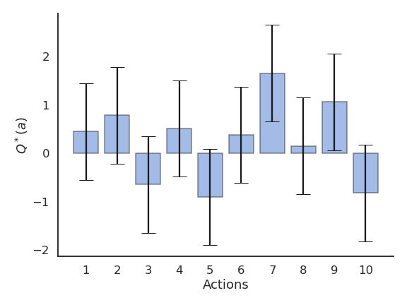
We have the choice between \(N\) different actions \((a_1, ..., a_N)\). Each action \(a\) taken at time \(t\) provides a reward \(r_t\) drawn from the action-specific probability distribution \(r(a)\).
The mathematical expectation of that distribution is the expected reward, called the true value of the action \(Q^*(a)\).
\[ Q^*(a) = \mathbb{E} [r(a)] \]
The reward distribution also has a variance: we usually ignore it in RL, as all we care about is the optimal action \(a^*\) (but see distributional RL later).
\[a^* = \text{argmax}_a \, Q^*(a)\]
If we take the optimal action an infinity of times, we maximize the reward intake on average. The question is how to find out the optimal action through trial and error, i.e. without knowing the exact reward distribution \(r(a)\). We only have access to samples of \(r(a)\) by taking the action \(a\) at time \(t\) (a trial, play or step).
\[r_t \sim r(a)\]
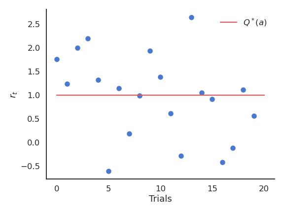
The received rewards \(r_t\) vary around the true value over time. We need to build estimates \(Q_t(a)\) of the value of each action based on the samples. These estimates will be very wrong at the beginning, but should get better over time.
Random sampling
Expectation
An important metric for a random variable is its mathematical expectation or expected value. For discrete distributions, it is the “mean” realization / outcome weighted by the corresponding probabilities:
\[ \mathbb{E}[X] = \sum_{i=1}^n P(X = x_i) \, x_i \]
For continuous distributions, one needs to integrate the probability density function (pdf) instead of the probabilities:
\[ \mathbb{E}[X] = \int_{x \in \mathcal{D}_X} f(x) \, x \, dx \]
One can also compute the expectation of a function of a random variable:
\[ \mathbb{E}[g(X)] = \int_{x \in \mathcal{D}_X} f(x) \, g(x) \, dx \]
Random sampling
In ML and RL, we deal with random variables whose exact probability distribution is unknown, but we are interested in their expectation or variance anyway.
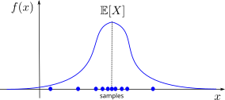
Random sampling or Monte Carlo sampling (MC) consists of taking \(N\) samples \(x_i\) out of the distribution \(X\) (discrete or continuous) and computing the sample average:
\[ \mathbb{E}[X] = \mathbb{E}_{x \sim X} [x] \approx \frac{1}{N} \, \sum_{i=1}^N x_i \]
More samples will be obtained where \(f(x)\) is high (\(x\) is probable), so the average of the sampled data will be close to the expected value of the distribution.
MC estimates are only correct when:
the samples are i.i.d (independent and identically distributed):
- independent: the samples must be unrelated with each other.
- identically distributed: the samples must come from the same distribution \(X\).
the number of samples is large enough.
One can estimate any function of the random variable with random sampling:
\[ \mathbb{E}[f(X)] = \mathbb{E}_{x \sim X} [f(x)] \approx \frac{1}{N} \, \sum_{i=1}^N f(x_i) \]
Central limit theorem
Suppose we have an unknown distribution \(X\) with expected value \(\mu = \mathbb{E}[X]\) and variance \(\sigma^2\). We can take randomly \(N\) samples from \(X\) to compute the sample average:
\[ S_N = \frac{1}{N} \, \sum_{i=1}^N x_i \]
If we perform the sampling multiple times, even with few samples, the average of the sampling averages will be very close to the expected value. The more samples we get, the smaller the variance of the estimates. Although the distribution \(X\) can be anything, the sampling averages are normally distributed.

CLT shows that the sampling average is an unbiased estimator of the expected value of a distribution:
\[\mathbb{E}(S_N) = \mathbb{E}(X)\]
An estimator is a random variable used to measure parameters of a distribution (e.g. its expectation). The problem is that estimators can generally be biased.
Take the example of a thermometer \(M\) measuring the temperature \(T\). \(T\) is a random variable (normally distributed with \(\mu=20\) and \(\sigma=10\)) and the measurements \(M\) relate to the temperature with the relation:
\[ M = 0.95 \, T + 0.65 \]
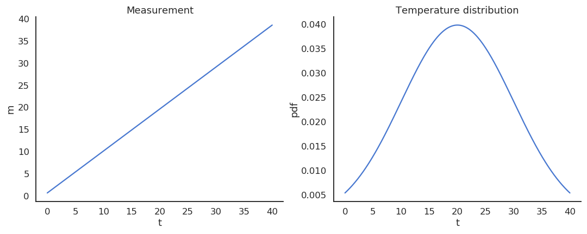
The thermometer is not perfect, but do random measurements allow us to estimate the expected value of the temperature? We could repeatedly take 100 random samples of the thermometer and see how the distribution of sample averages look like:
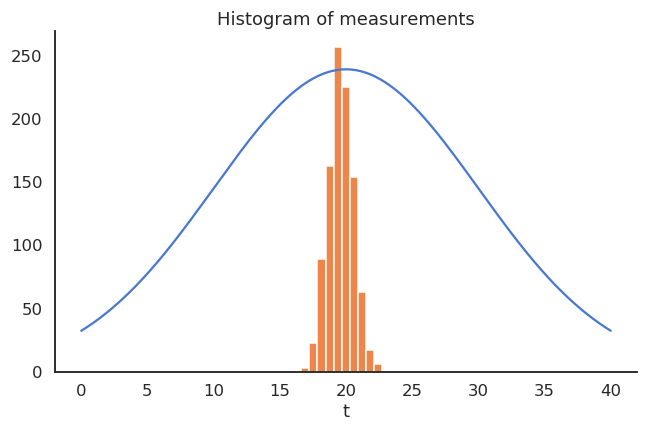
But, as the expectation is linear, we actually have:
\[ \mathbb{E}[M] = \mathbb{E}[0.95 \, T + 0.65] = 0.95 \, \mathbb{E}[T] + 0.65 = 19.65 \neq \mathbb{E}[T] \]
The thermometer is a biased estimator of the temperature.
Let’s note \(\theta\) a parameter of a probability distribution \(X\) that we want to estimate (it does not have to be its mean). An estimator \(\hat{\theta}\) is a random variable mapping the sample space of \(X\) to a set of sample estimates. The bias of an estimator is the mean error made by the estimator:
\[ \mathcal{B}(\hat{\theta}) = \mathbb{E}[\hat{\theta} - \theta] = \mathbb{E}[\hat{\theta}] - \theta \]
The variance of an estimator is the deviation of the samples around the expected value:
\[ \text{Var}(\hat{\theta}) = \mathbb{E}[(\hat{\theta} - \mathbb{E}[\hat{\theta}] )^2] \]
Ideally, we would like estimators with a low bias, as the estimations would be correct on average (= equal to the true parameter) and a low variance, as we would not need many estimates to get a correct estimate (CLT: \(\frac{\sigma}{\sqrt{N}}\))
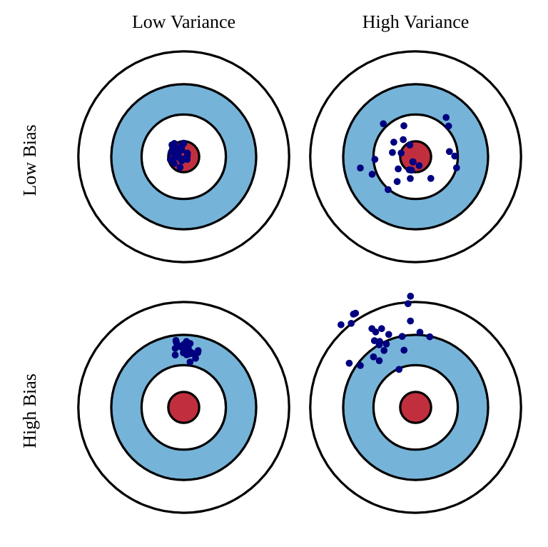
Unfortunately, the perfect estimator does not exist. Estimators will have a bias and a variance. For estimators with a high bias, the estimated values will be wrong, and the policy not optimal. For estimators with a high variance, we will need a lot of samples (trial and error) to have correct estimates. One usually talks of a bias/variance trade-off: if you have a small bias, you will have a high variance, or vice versa. There is a sweet spot balancing the two. In machine learning, bias corresponds to underfitting, variance to overfitting.
Sampling-based evaluation
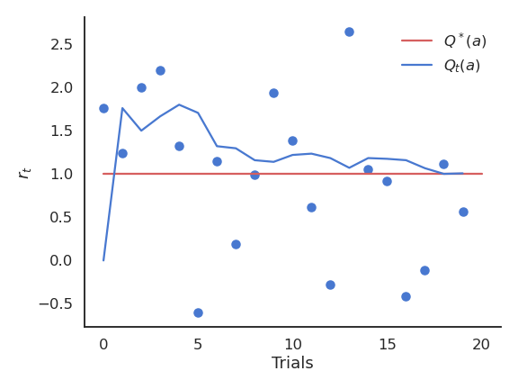
The expectation of the reward distribution can be approximated by the mean of its samples:
\[ \mathbb{E} [r(a)] \approx \frac{1}{N} \sum_{t=1}^N r_t |_{a_t = a} \]
Suppose that the action \(a\) had been selected \(t\) times, producing rewards
\[ (r_1, r_2, ..., r_t) \]
The estimated value of action \(a\) at play \(t\) is then:
\[ Q_t (a) = \frac{r_1 + r_2 + ... + r_t }{t} \]
Over time, the estimated action-value converges to the true action-value:
\[ \lim_{t \to \infty} Q_t (a) = Q^* (a) \]
The drawback of maintaining the mean of the received rewards is that it consumes a lot of memory:
\[ Q_t (a) = \frac{r_1 + r_2 + ... + r_t }{t} = \frac{1}{t} \, \sum_{i=1}^{t} r_i \]
It is possible to update an estimate of the mean in an online or incremental manner:
\[ \begin{aligned} Q_{t+1}(a) &= \frac{1}{t+1} \, \sum_{i=1}^{t+1} r_i = \frac{1}{t+1} \, (r_{t+1} + \sum_{i=1}^{t} r_i )\\ &= \frac{1}{t+1} \, (r_{t+1} + t \, Q_{t}(a) ) \\ &= \frac{1}{t+1} \, (r_{t+1} + (t + 1) \, Q_{t}(a) - Q_t(a)) \end{aligned} \]
The estimate at time \(t+1\) depends on the previous estimate at time \(t\) and the last reward \(r_{t+1}\):
\[ Q_{t+1}(a) = Q_t(a) + \frac{1}{t+1} \, (r_{t+1} - Q_t(a)) \]
The problem with the exact mean is that it is only exact when the reward distribution is stationary, i.e. when the probability distribution does not change over time. If the reward distribution is non-stationary, the \(\frac{1}{t+1}\) term will become very small and prevent rapid updates of the mean.
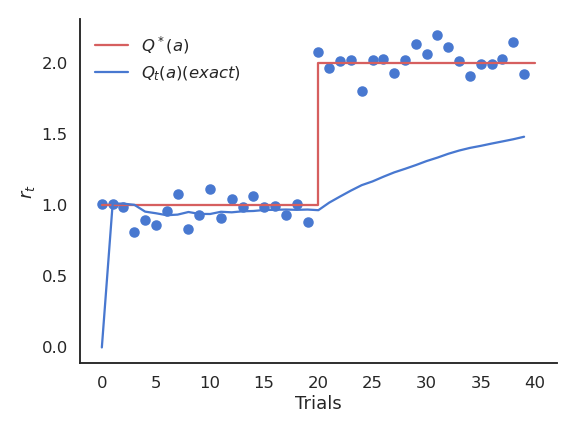
The solution is to replace \(\frac{1}{t+1}\) with a fixed parameter called the learning rate (or step size) \(\alpha\):
\[ \begin{aligned} Q_{t+1}(a) & = Q_t(a) + \alpha \, (r_{t+1} - Q_t(a)) \\ & \\ & = (1 - \alpha) \, Q_t(a) + \alpha \, r_{t+1} \end{aligned} \]
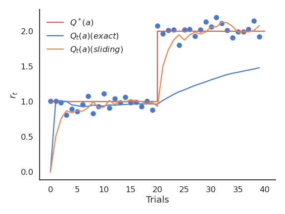
The computed value is called an exponentially moving average (or sliding average), as if one used only a small window of the past history.
\[ Q_{t+1}(a) = Q_t(a) + \alpha \, (r_{t+1} - Q_t(a)) \]
or:
\[ \Delta Q(a) = \alpha \, (r_{t+1} - Q_t(a)) \]
The moving average adapts very fast to changes in the reward distribution and should be used in non-stationary problems. It is however not exact and sensible to noise. Choosing the right value for \(\alpha\) can be difficult.
The form of this update rule is very important to remember:
\[ \text{new estimate} = \text{current estimate} + \alpha \, (\text{target} - \text{current estimate}) \]
Estimates following this update rule track the mean of their sampled target values. \(\text{target} - \text{current estimate}\) is the prediction error between the target and the estimate.
Action selection
Let’s suppose we have formed reasonable estimates of the Q-values \(Q_t(a)\) at time \(t\). Which action should we do next? If we select the next action \(a_{t+1}\) randomly (random agent), we do not maximize the rewards we receive, but we can continue learning the Q-values. Choosing the action to perform next is called action selection and several schemes are possible.
Greedy action selection
The greedy action is the action whose expected value is maximal at time \(t\) based on our current estimates:
\[ a^*_t = \text{argmax}_{a} Q_t(a) \]
If our estimates \(Q_t\) are correct (i.e. close from \(Q^*\)), the greedy action is the optimal action and we maximize the rewards on average. If our estimates are wrong, the agent will perform sub-optimally.
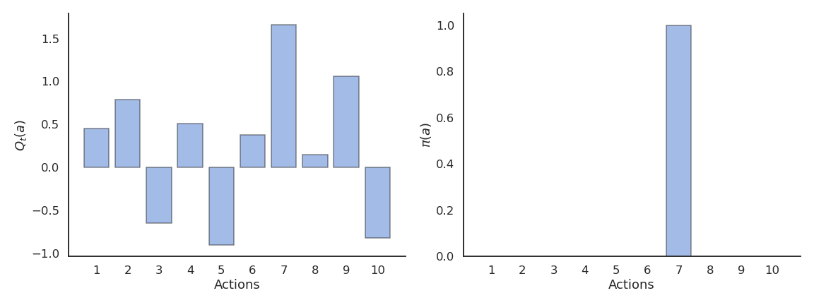
This defines the greedy policy, where the probability of taking the greedy action is 1 and the probability of selecting another action is 0:
\[ \pi(a) = \begin{cases} 1 \; \text{if} \; a = a_t^* \\ 0 \; \text{otherwise.} \\ \end{cases} \]
The greedy policy is deterministic: the action taken is always the same for a fixed \(Q_t\).
However, the greedy action selection scheme only works when the estimates are good enough. Imagine that estimates are initially bad (e.g. 0), and an action is sampled randomly. If the received reward is positive, the new Q-value of that action becomes positive, so it becomes the greedy action. At the next step, greedy action selection will always select that action, although the second one could have been better but it was never explored.
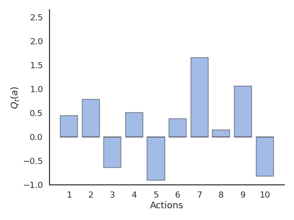
This exploration-exploitation dilemma is the hardest problem in RL:
- Exploitation is using the current estimates to select an action: they might be wrong!
- Exploration is selecting non-greedy actions in order to improve their estimates: they might not be optimal!
One has to balance exploration and exploitation over the course of learning:
- More exploration at the beginning of learning, as the estimates are initially wrong.
- More exploitation at the end of learning, as the estimates get better.

\(\epsilon\)-greedy action selection
\(\epsilon\)-greedy action selection ensures a trade-off between exploitation and exploration. The greedy action is selected with probability \(1 - \epsilon\) (with \(0 < \epsilon <1\)), the others with probability \(\epsilon\):
\[ \pi(a) = \begin{cases} 1 - \epsilon \; \text{if} \; a = a_t^* \\ \frac{\epsilon}{|\mathcal{A}| - 1} \; \text{otherwise.} \end{cases} \]
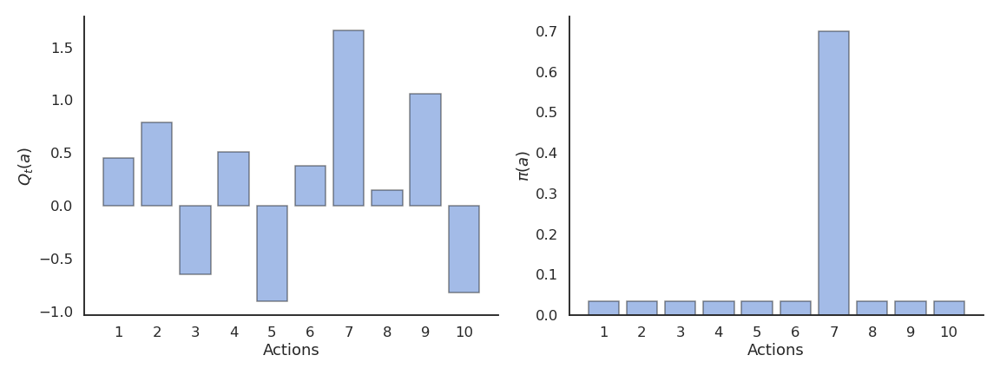
The parameter \(\epsilon\) controls the level of exploration: the higher \(\epsilon\), the more exploration. One can set \(\epsilon\) high at the beginning of learning and progressively reduce it to exploit more. However, it chooses equally among all actions: the worst action is as likely to be selected as the next-to-best action.
Softmax action selection
Softmax action selection defines the probability of choosing an action using all estimated value. It represents the policy using a Gibbs (or Boltzmann) distribution:
\[ \pi(a) = \dfrac{\exp \dfrac{Q_t(a)}{\tau}}{ \displaystyle\sum_{a'} \exp \dfrac{Q_t(a')}{\tau}} \]
where \(\tau\) is a positive parameter called the temperature.
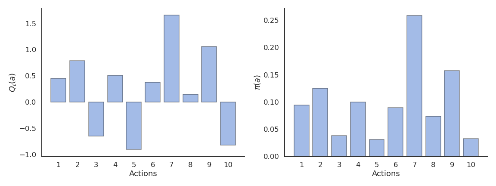
Just as \(\epsilon\), the temperature \(\tau\) controls the level of exploration:
- High temperature causes the actions to be nearly equiprobable (random agent).
- Low temperature causes the greediest actions only to be selected (greedy agent).
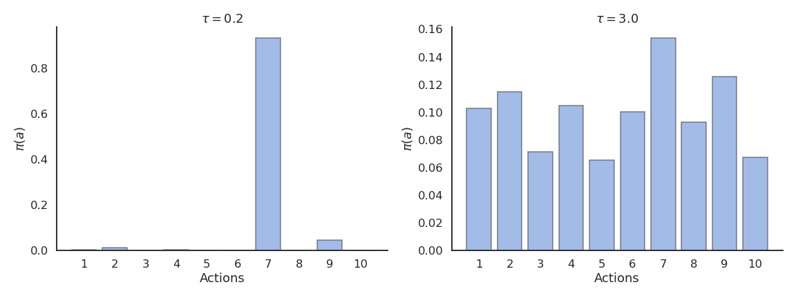
Optimistic initial values
The problem with online evaluation is that it depends a lot on the initial estimates \(Q_0\). If the initial estimates are already quite good (e.g. using expert knowledge), the Q-values will converge very fast. If the initial estimates are very wrong, we will need a lot of updates to correctly estimate the true values. This problem is called bootstrapping: the better your initial estimates, the better (and faster) the results.
\[ \begin{aligned} &Q_{t+1}(a) = (1 - \alpha) \, Q_t(a) + \alpha \, r_{t+1} \\ &\\ & \rightarrow Q_1(a) = (1 - \alpha) \, Q_0(a) + \alpha \, r_1 \\ & \rightarrow Q_2(a) = (1 - \alpha) \, Q_1(a) + \alpha \, r_2 = (1- \alpha)^2 \, Q_0(a) + (1-\alpha)\alpha \, r_1 + \alpha r_2 \\ \end{aligned} \]
The influence of \(Q_0\) on \(Q_t\) fades quickly with \((1-\alpha)^t\), but that can be lost time or lead to a suboptimal policy. However, we can use this at our advantage with optimistic initialization. By choosing very high initial values for the estimates (they can only decrease), one can ensure that all possible actions will be selected during learning by the greedy method, solving the exploration problem. This leads however to an overestimation of the value of other actions.
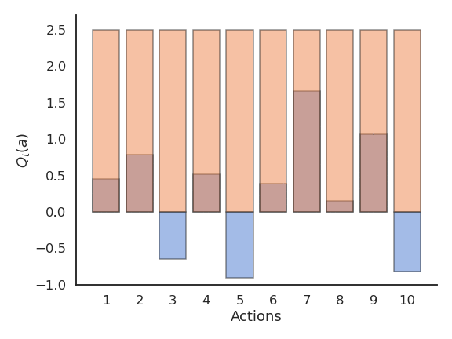
Reinforcement comparison
Actions followed by large rewards should be made more likely to reoccur, whereas actions followed by small rewards should be made less likely to reoccur. But what is a large/small reward? Is a reward of 5 large or small? Reinforcement comparison methods only maintain a preference \(p_t(a)\) for each action, which is not exactly its Q-value. The preference for an action is updated after each play, according to the update rule:
\[ p_{t+1}(a_t) = p_{t}(a_t) + \beta \, (r_t - \tilde{r}_t) \]
where \(\tilde{r}_t\) is the moving average of the recently received rewards (regardless the action):
\[ \tilde{r}_{t+1} = \tilde{r}_t + \alpha \, (r_t - \tilde{r}_t) \]
If an action brings more reward than usual (good surprise), we increase the preference for that action. If an action brings less reward than usual (bad surprise), we decrease the preference for that action. \(\beta > 0\) and \(0 < \alpha < 1\) are two constant parameters.
Preferences are updated by replacing the action-dependent Q-values by a baseline \(\tilde{r}_t\):
\[ p_{t+1}(a_t) = p_{t}(a_t) + \beta \, (r_t - \tilde{r}_t) \]
The preferences can be used to select the action using the softmax method just as the Q-values (without temperature):
\[ \pi_t (a) = \dfrac{\exp p_t(a)}{ \displaystyle\sum_{a'} \exp p_t(a')} \]
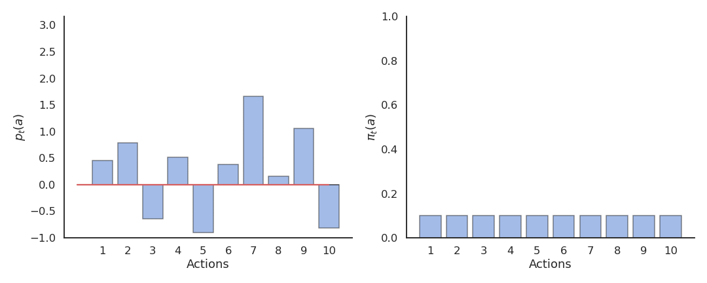
Reinforcement comparison can be very effective, as it does not rely only on the rewards received, but also on their comparison with a baseline, the average reward. This idea is at the core of actor-critic architectures which we will see later. The initial average reward \(\tilde{r}_{0}\) can be set optimistically to encourage exploration.
Gradient bandit algorithm
Instead of only increasing the preference for the executed action if it brings more reward than usual, we could also decrease the preference for the other actions. The preferences are used to select an action \(a_t\) via softmax:
\[ \pi_t (a) = \dfrac{\exp p_t(a)}{ \displaystyle\sum_{a'} \exp p_t(a')} \]
Update rule for the action taken \(a_t\):
\[ p_{t+1}(a_t) = p_{t}(a_t) + \beta \, (r_t - \tilde{r}_t) \, (1 - \pi_t(a_t)) \]
Update rule for the other actions \(a \neq a_t\):
\[ p_{t+1}(a) = p_{t}(a) - \beta \, (r_t - \tilde{r}_t) \, \pi_t(a) \]
Update of the reward baseline:
\[ \tilde{r}_{t+1} = \tilde{r}_t + \alpha \, (r_t - \tilde{r}_t) \]
The preference can increase become quite high, making the policy greedy towards the end. No need for a temperature parameter!
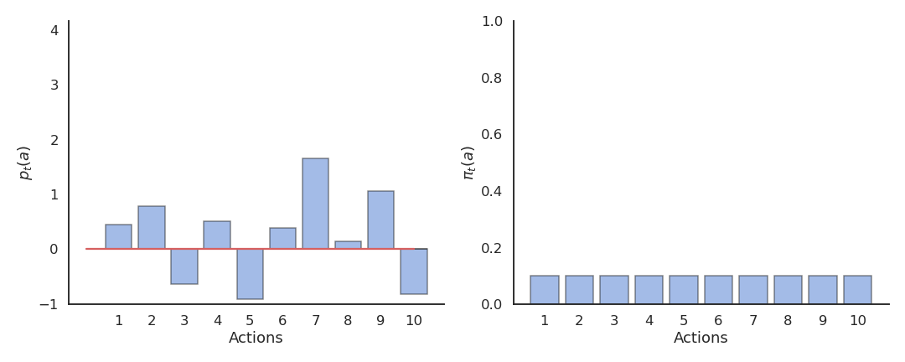
Upper-Confidence-Bound action selection
In the previous methods, exploration is controlled by an external parameter (\(\epsilon\) or \(\tau\)) which is global to each action an must be scheduled. A much better approach would be to decide whether to explore an action based on the uncertainty about its Q-value: If we are certain about the value of an action, there is no need to explore it further, we only have to exploit it if it is good.
The central limit theorem tells us that the variance of a sampling estimator decreases with the number of samples:
The distribution of sample averages is normally distributed with mean \(\mu\) and variance \(\frac{\sigma^2}{N}\).
\[S_N \sim \mathcal{N}(\mu, \frac{\sigma}{\sqrt{N}})\]
The more you explore an action \(a\), the smaller the variance of \(Q_t(a)\), the more certain you are about the estimation, the less you need to explore it.
Upper-Confidence-Bound (UCB) action selection is a greedy action selection method that uses an exploration bonus:
\[ a^*_t = \text{argmax}_{a} \left[ Q_t(a) + c \, \sqrt{\frac{\ln t}{N_t(a)}} \right] \]
\(Q_t(a)\) is the current estimated value of \(a\) and \(N_t(a)\) is the number of times the action \(a\) has already been selected.
It realizes a balance between trusting the estimates \(Q_t(a)\) and exploring uncertain actions which have not been explored much yet. The term \(\sqrt{\frac{\ln t}{N_t(a)}}\) is an estimate of the variance of \(Q_t(a)\). The sum of both terms is an upper-bound of the true value \(\mu + \sigma\). When an action has not been explored much yet, the uncertainty term will dominate and the action be explored, although its estimated value might be low. When an action has been sufficiently explored, the uncertainty term goes to 0 and we greedily follow \(Q_t(a)\).
The exploration-exploitation trade-off is automatically adjusted by counting visits to an action.
\[ a^*_t = \text{argmax}_{a} \left[ Q_t(a) + c \, \sqrt{\frac{\ln t}{N_t(a)}} \right] \]
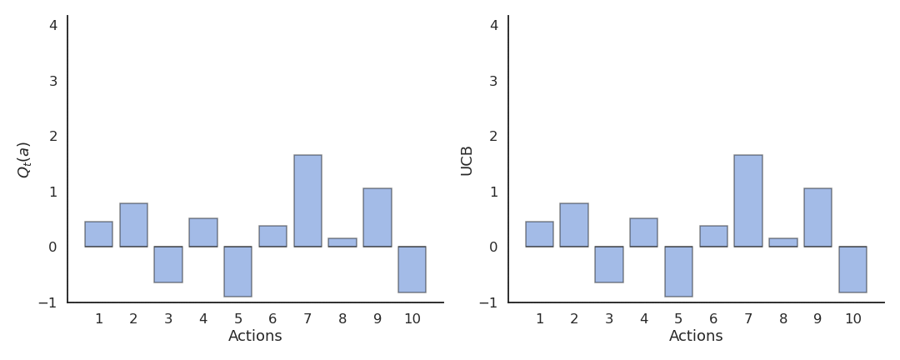